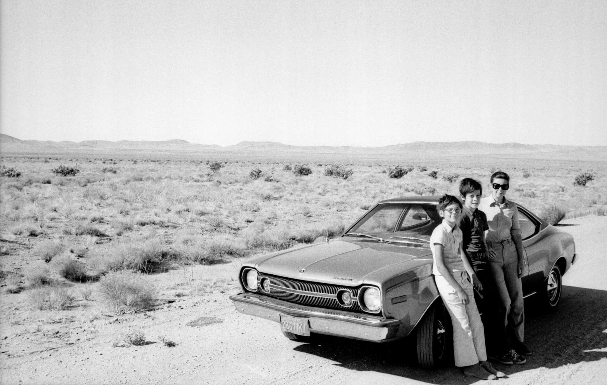
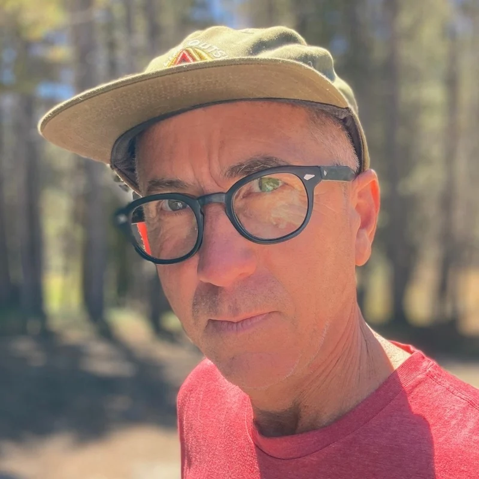

Personal oral histories

The stories we keep
When we lose a parent or grandparent, we often lose their stories, too. Stories/Histories preserves the reflections and recollections that define a life and a legacy.
Drawing on my experience as a professional oral historian, I conduct thoughtful, sit-down interviews that feel like conversations. The result: a bound transcript, an audio recording, a coffee-table book; even video is an option. Whatever the form, it’s something to share, revisit, and pass down to others.
From the interviews
“I remember driving up there, and I was like, ‘Why are we visiting this person? Why are we visiting Greg?’ My mother turned around and said, ‘He’s your brother.’ ”
How it works
-
Introductions
An initial chat to get acquainted, discuss the scope of the project, and gather background information.
-
In-person interview
A typical session lasts an hour or two and takes place in your home. Additional sessions may be scheduled as necessary.
-
Transcript review and approval
Once the audio recording has been transcribed and lightly edited, you have an opportunity to make corrections and adjustments.
-
Photo selection and scanning Optional
For coffee-table books, it may be necessary to source material from your family albums and then digitize those images.
-
Video session Optional
A short, documentary-style video capturing a favorite story or anecdote. Recorded separately from the main interview.
From the interviews
“You see, we were not too far from the volcano. And we used to ride up there…. In fact, we were in a car that ran off the road and tipped over.”
The Numbers
A full life history requires several hours of interviews, sometimes across multiple interview sessions. On the other hand, you may want to focus on a specific event or period of time. The scope of the project will determine the exact pricing. In the meantime, use these ranges as a guide.
The interviewer
Before moving to the mainland and finding my way as a writer, I spent several years working at the University of Hawaii’s Center for Oral History. Our mission there was to preserve the stories of people typically overlooked by biographers — teachers, nurses, electricians, shopkeepers. Most of them were long retired by the time I sat down with them and surprised to find this researcher from the university wanting to record their reminiscences. In many respects, it was a dream job, easily the most rewarding thing I’ve ever done for a living. And the people I interviewed, they also seemed to appreciate the experience.
Stories/Histories picks up where I left off in Hawaii, capturing the personal histories of everyday people for posterity.

From the interviews
“So he says to me, ‘Hey, I’ll give you some mescaline for some of your wine.’ Well, I didn’t know what mescaline was, but I thought, Why not?”
Contact
Whose legacy would you like to preserve?
Email hozy@stories-histories.com to discuss your project.
Based in the Bay Area. Remote interviews also available.